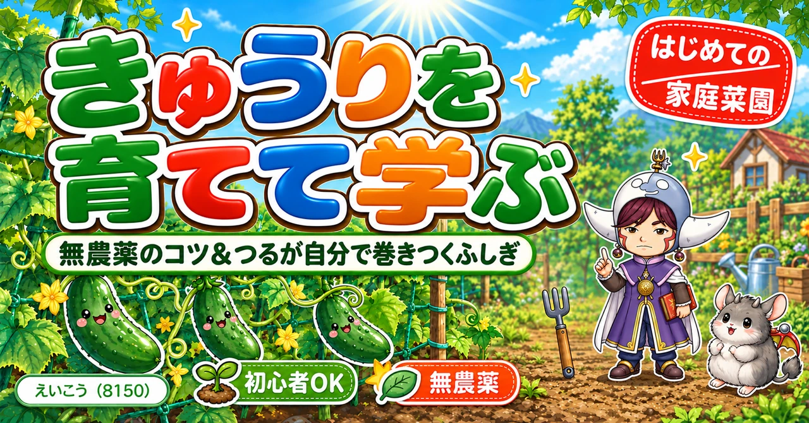
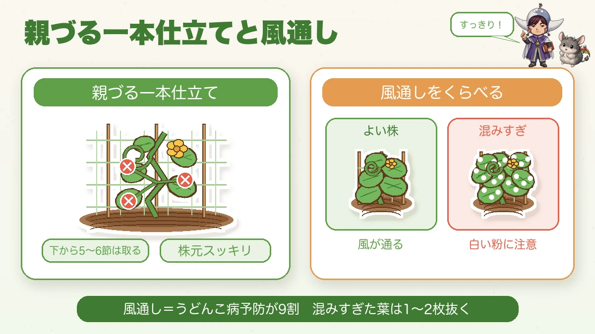
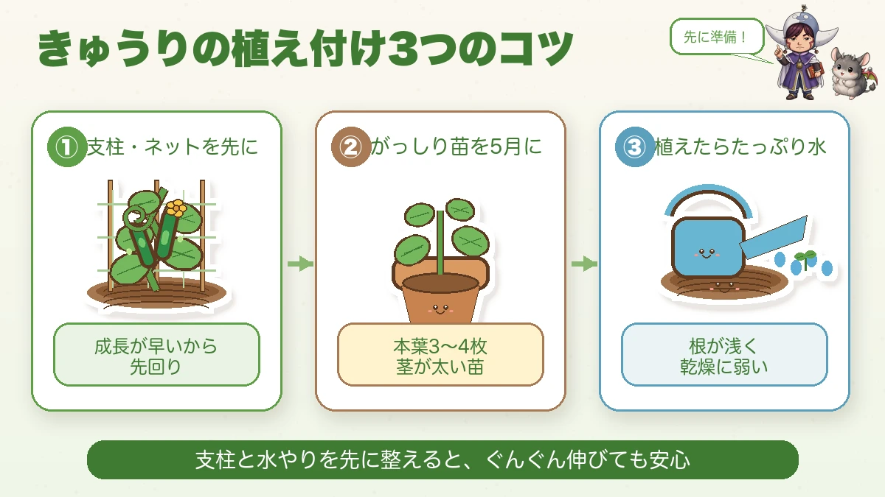
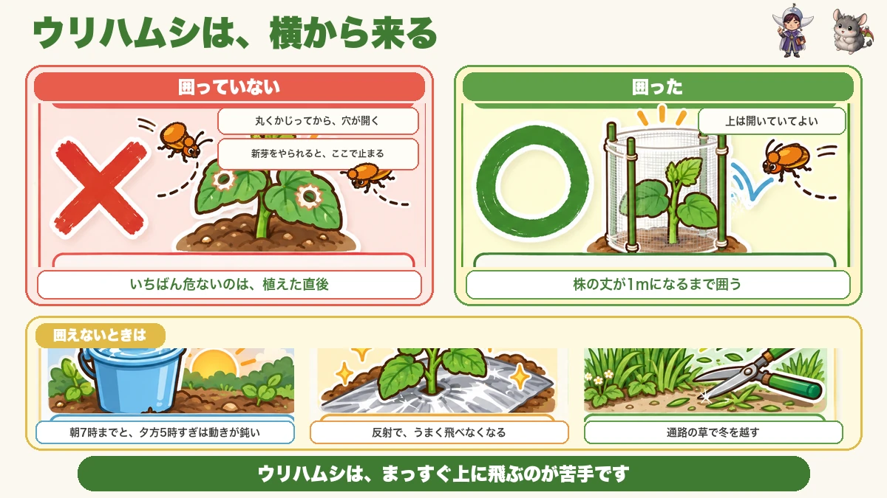
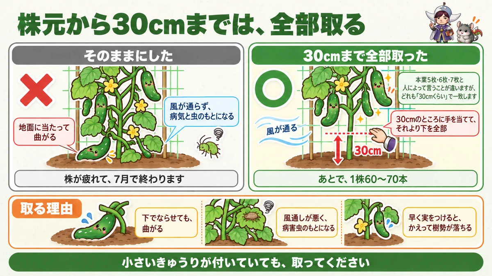
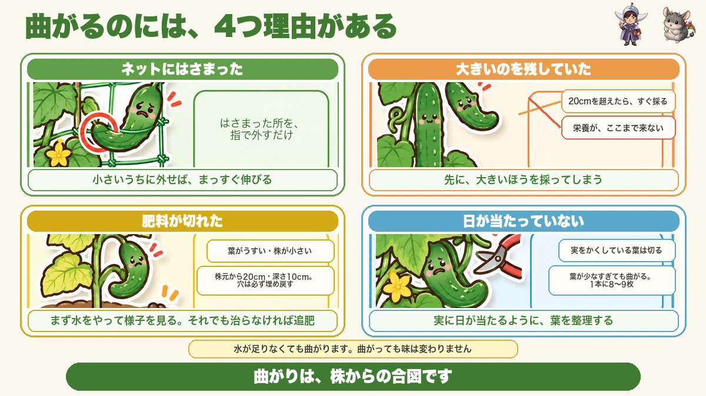
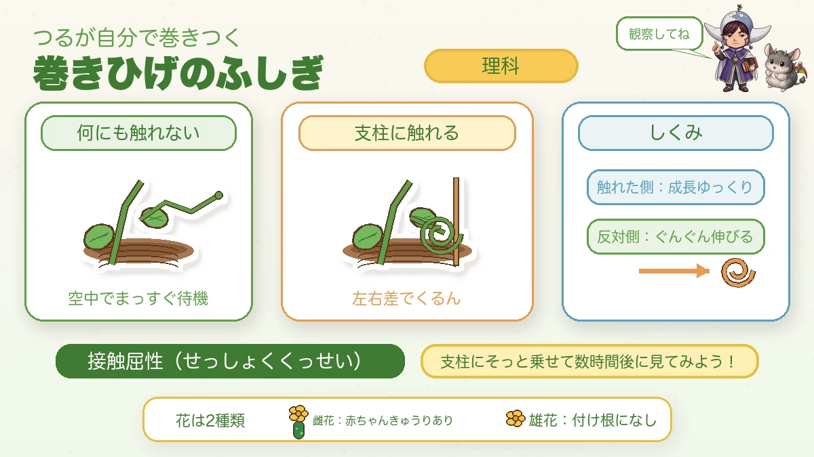

きゅうり栽培の段取り帳｜苗選び・つる管理・曲がる実と店じまいの判断

どうも、8150（えいこう）です🌱 家庭菜園歴8年、有機・無農薬でやってる、野菜と理科が好きな人間です。
📖 この記事の目次
この記事で分かること
- 最初に『親づるに実が付きやすいタイプ』『子づるを使うタイプ』『地面をはわせるタイプ』を見分け、切る枝を決めます。
- 苗を植える日は、売り場のにぎわいより夜の冷え込みと土の暖かさを優先します。
- 曲がった実を見つけたら、引っ掛かり、取り残し、土の乾き、株の勢いを順番に確かめます。
- 水も肥料も、多いほど安心とは限りません。根の周りに水と空気がある状態を目指します。
- 株間、追肥、葉を取る枚数には異なる説明があります。栽培条件をそろえて選びます。
- 収穫が減ったら、新しい葉と花、次の野菜の植え時から、継続か片づけかを判断します。
きゅうりの管理は、『伸ばす場所を作る』『若い実を取り遅れない』『株の変化を見て調整する』の順で考えると整理できます。枝の名前が出てくると、なんか急に難しくなるんですけど、大丈夫。最初は一本の苗から出ている太い茎をたどればOKです。
これから始めるみなさんは早見と手順へ。実が曲がる、葉に穴が増える、といった困りごとがあるなら症状の章からどうぞ。片づけの途中で困ったときも使えるよう、ネットの外し方と跡地の準備までまとめました。
早見：きゅうりの育て方（ひと目で分かる数字）
日付・間隔・収穫の目安
- 春の植え時：4月中旬〜ゴールデンウィークまでという栽培例があります。寒い地域や遅霜のある場所には、そのまま当てはめません。苗の表示と地域の気温を確認します。
- 温度：最低気温10℃以上、地温15℃以上を目安にする説明と、20〜28℃の暖かい条件を挙げる説明があります。夜の最低気温、土の温度、生育に適する温度を混ぜないでください。
- 苗の大きさ：本葉3〜4枚程度の若い苗を使う説明があります。葉数だけでなく、茎の太さ、傷、葉裏、根鉢の状態も見ます。
- 株間：40〜50cm、60cm、無農薬で葉の混雑を避ける80cm〜1mなど、説明によって違います。広く枝を伸ばす方法ほど、隣の株との余裕が必要です。
- うね幅：一列植えで60cmという例と、大きなアーチを使う210cmという例があります。同じ幅の候補というより、支柱の構造が違う計画です。
- うねの高さ：15〜20cmの高いうねにする説明と、浅く広く作る説明があります。雨のあとに水が残る土か、すぐ乾く土かで選びます。
- 元肥：植える1か月以上前から準備する説明があります。未熟なものを植え穴へ集めず、使う肥料の表示にある準備期間と量を守ります。
- 追肥開始：植えて約3週間、最初の実が育つ約1か月後、収穫開始時という複数の目安があります。日付だけでなく新葉の伸びと実の負担を見ます。
- 追肥間隔：2週間おき〜月1回という説明があります。元肥の量、肥料の効き方、収穫量によって違い、元気なら予定の追肥を見送る考え方もあります。
- 収穫開始まで：4月中旬に苗を植え、6月後半から収穫する例があります。種まきから一律に何日、という数字ではありません。苗の植え日と種まき日は分けて記録します。
- 収穫サイズ：一般的な長いタイプは15〜20cmを目安にする説明があります。畑に毎日行けなければ10cmを超えた若い実から取る考え方もあります。ミニなどは品種の表示を優先します。
- 見回り：収穫が始まったら1日1回、よく実る時期は朝夕に確認する例があります。明日行けないなら、今日やや小さめで取る判断が役立ちます。
- 夏の種まき：7月まきに対応する地這い・秋どり用のタイプを使う例があります。9月頃の収穫をねらう計画で、春用の残り種が同じように使えるとは限りません。
- 連作の間隔：同じ場所でウリ科を2〜3年作っていないことを目安にする説明があります。病気の履歴や接ぎ木の有無でリスクは変わり、この年数で無条件に安全になるわけではありません。
- 終了時期：春植えで7月中〜8月中旬という幅があります。暦で一斉に抜かず、花、新しい葉、実の育ちと後作の日程を比べます。
数字を畑の計画に変える
まず決めるのは品種、場所、見回れる頻度です。毎日収穫できるなら標準サイズまで見ながら待てます。週末だけの畑なら、小さいうちに持ち帰ることを含めて計画します。採りたい本数だけを先に決めると、管理する時間が足りなくなりやすいんですよね。
株間と支柱の幅もセットにしてください。80cm空ける方法の枝数を、40cmの配置に持ち込むと、すぐ隣と葉が重なります。逆に広く植えても、中央に全ての枝を集めれば風は通りません。根元の距離だけでなく、育ったつるが使える面積を見ます。
- 植える地域の遅霜と、苗の適期を調べた
- 品種の実の付き方と、仕立て方を確認した
- ネット、通路、収穫時に手を入れる空間を確保した
- ウリ科を育てた場所と、不調が出た区画を記録した
- 植え日、最初の追肥日、収穫開始日を書く場所を作った
数字が違う説明を見つけても、急いで平均を取らなくてOKです。『何の品種を、どんな土で、どう伸ばす話か』が分かると、使う数字を選べます。
作業の手順（時期の順）
1．実の付き方と育てる場所を決める
- 苗や種の表示で、支柱栽培か地這い栽培かを確認します。
- 親づるに雌花が付きやすい節成り系か、子づるを活用するタイプかを調べます。
- ネットに伸ばす面積と通路を確保し、収穫のために葉の裏側へ手が届くか考えます。
- 同じ場所の栽培歴を確認し、土の病気が心配なら接ぎ木苗も候補にします。
親づるは、苗から上へ伸びる主な茎。そこから横に出る枝が子づるで、子づるから出る枝が孫づるです。最初から全部覚えようとせず、根元から主な茎をたどって、その横に出る一本を探してください。ここが分かると、枝を切る説明が読みやすくなります。
節成り系は親づるの節に実が付きやすく、管理の入口をつかみやすいタイプです。飛び節成り系は子づるなどの役割が大きいため、横の枝を全て取る管理をすると収穫する場所まで失いかねません。地這いは支柱を立てない代わりに、地面へ広がる空間と、実が土に直接触れない工夫が必要です。
『簡単そう』だけで選ぶより、『自分の場所でその形に育てられるか』を考える方が続けやすいです。狭い場所へ地這いのつるを押し込むより、縦に伸ばせる品種を選んだ方が管理しやすい場合があります。
2．苗を買う前に土と排水を整える
- 前作の根や支柱を片づけ、病気が出た場所をメモします。
- 雨のあとに水が残る場所と、乾きやすい場所を確認します。
- 土の状態と使う肥料の表示に合わせて元肥を準備します。
- 支柱を立てる場所と通路まで含め、浅く広く伸びる根の場所を確保します。
- 肥料が植え穴の底へ集中しないようにし、準備期間を取ってから植えます。
植えるところだけ土をよくして、通路はカチカチのまま、という状態には注意です。きゅうりの根は株元だけで暮らすわけではなく、周りへ広がります。通路の土も確認しておくと、あとで追肥や水やりをする場所が見えてきます。
水がたまりやすい畑では、うねを上げることと、水の出口を作ることを一緒に考えます。高さだけ増やしても、出口のない通路へ水が集まれば湿りが続きます。乾きやすい土なら、高く作りすぎることで水切れが早まることもあります。
肥料の数字は、資材が違えば比較できません。容量で量るものと重さで量るもの、成分濃度の違うものを、そのまま同じ量として使わないでください。ここでは材料に出てくる複数の配合を混ぜたレシピにせず、選んだ肥料の説明に沿って準備します。
3．苗の茎・葉裏・接ぎ目を確認する
- 葉だけでなく茎を見て、細く長く伸びすぎていないか確認します。
- 本葉が育ち、新しい葉が出ている苗を選びます。
- 葉裏の虫、変色、傷、株元の折れを調べます。
- 接ぎ木苗なら、接いだ部分の傷やぐらつきを確認します。
- 持ち帰った苗は風で倒れない場所に置き、適した植え日に合わせます。
葉が多い大きな苗ほど得、とは限りません。ポットの中で長く待った苗は、見た目の大きさと植えたあとの伸びが一致しないことがあります。値下げ品なら、値札より葉と根の状態を見てください。安さだけで決めると、あとで植え替える手間が増える場合があります。
接ぎ木は、きゅうりの地上部を別の丈夫な根の部分につないだ苗です。土の病気への抵抗性を利用できますが、葉を食べる虫や、全ての病気から守られるわけではありません。接ぎ目は若いうちに折れやすいため、購入後も風への備えが必要です。
4．植える前に支柱とネットを用意する
- 使う品種の仕立てに合う支柱を組み、固定部分を確認します。
- ネットの下端と上端を留め、たるみを減らします。
- 風で横へ揺れやすい構造なら、斜めの支えなどで補強します。
- 苗を植える場所に支柱が直接刺さらないよう、位置を合わせます。
- 通路から実を探せるか、隣の作物へつるが入らないか見ます。

きゅうりは大きな葉を広げるので、伸びたあとには風を受ける面積も増えます。苗のときに平気だった支柱が、夏にはぐらつくことがあるんですよね。葉が茂ってから直すより、何も付いていない今の方が手を入れやすいです。
ネットが緩いと、巻きひげでつかんでも全体が揺れます。つるが地面へ落ちたり、固定した茎がこすれたりする原因になります。見た目を整えるだけでなく、苗を支えられる強さを確認してください。
5．根鉢を崩しすぎず、接ぎ目を土へ埋めずに植える
- 苗の根鉢と植え穴に水分を行き渡らせます。
- 穴に入れた水が引き、泥水がたまっていないことを確認します。
- ポットからそっと抜き、根鉢を大きく崩さずに置きます。
- 根鉢の表面を深く埋め込まず、接ぎ木の接合部が地上に残るようにします。
- 周りへ土を戻し、強く押して根をつぶさないようにします。
- 土の湿りを見て必要な水を補い、苗を支柱へ緩く留めます。

植えた直後の追加の水には違う説明があります。先に穴と根鉢を十分湿らせた場合と、乾いた土へ植えた場合を同じように扱わないことがポイントです。土の中が湿っているのに、安心のために何度も水を足す必要はありません。
接ぎ木苗は、接ぎ目を埋めてしまうと、きゅうり側から根が出るなどして台木を使う利点が損なわれることがあります。台木から伸びた芽も、きゅうりの子づるとは別です。見慣れない葉が根元から出たら、接ぎ目との位置を確かめます。
茎を留めるときは、細い先端を引っ張らず、少し下の丈夫な部分を支えます。紐をきつく締めると、太くなる茎を圧迫します。苗が風で倒れないことと、伸びる余裕があることを両方見てください。
6．小さな苗を虫と冷え込みから守る
- 植えた苗の周囲をネットなどで囲い、ウリハムシが近づきにくい形にします。
- 内側に虫が残っていないか、葉裏を確かめます。
- 防寒も兼ねる囲いなら、暑い日の中の温度を確認します。
- 新葉が伸び、寒さの心配が減ったら、囲いを外す時期を考えます。
- つるが網目へ入り込む前に、囲いから栽培用ネットへ移します。

周囲を囲って上を開ける方法は、ウリハムシ対策として使われる例があります。ただし、全ての虫を入れない完全な防虫構造ではありません。囲いを作ったあとも葉裏を見てください。中へ入った虫を囲ってしまうと、そこから食害が続きます。
苗が小さい時期は、葉一枚が失われる影響も大きいです。成長してからの小さな穴と、植えた直後に新芽が食べられる被害を、同じ重さで見ないことが大切。初期は新しい葉と先端を守る方へ手を回します。
7．株元の芽と花を整理する
- 根元から親づるをたどり、下の方の子づると花を探します。
- 地面に近い実や、株の初期生育を妨げる低い位置の芽を取り除きます。
- 高さ約30cmを参考にしつつ、品種の仕立て説明にある節数を確認します。
- 健康な葉まで一緒に全て取らないよう、葉、わき芽、花を区別します。
- 同じ場所からまた芽が伸びたら、見回りのときに確認します。

図の『全部取る』は、株元の芽や花を整理する作業の目印です。植えたばかりの苗の健康な葉まで一斉に消す意味で読まないでください。葉は株を育てるための光合成を担っています。
下の実を早く残すと、まだ小さな株が実を育てる仕事も引き受けます。地面に触れる実は傷みや曲がりも起こしやすく、低い枝が込み合えば泥はねや虫の確認も難しくなります。最初の実を一つ見送るのは、あとで育つ株へ仕事を残すためです。
8．つるを誘導し、混み合う前に止める
- 親づるは見分けやすい方向へ伸ばし、垂れた部分を留め直します。
- 低い位置の子づるを整理したあと、必要な高さの子づるを残します。
- 子づるの実を一つ育てる方法なら、その実より先の葉を1〜2枚残して先端を止めます。
- 親づるがネットの上端へ達したら、選んだ仕立て方に合わせて摘心します。
- 次に伸ばす元気な子づるを選び、左右へ分けて空いている場所へ導きます。
- 内側へ入る枝や隣の株と絡む枝を見て、葉の重なりを減らします。
摘心は、枝の伸びる先端を取る作業です。収穫する実まで切らないように、実、葉、その先端の順で目を移してください。『葉を残す』と『実のすぐ上で切る』を同じことだと思うと、必要な葉が残らない場合があります。
全ての品種を同じ枝数にする必要はありません。親づるに実が付きにくい品種なら、実を付ける子づるを残します。株間を広く取って何本も伸ばす例と、狭い場所で少数にまとめる例は別の計画です。枝数を増やす前に、広げる場所があるか見てください。
切る作業は雨でぬれた日を避け、切り口が乾きやすい時間に行います。急に伸びた枝を強く引き戻すと折れることがあるので、小さいうちに少しずつ向きを整えます。巻きひげがつかんだ場所を無理に引きはがさないようにしましょう。
9．土の中の湿りを見て水を足す
- 表面だけでなく、少し下の土が湿っているか確かめます。
- 葉がしおれる時間帯と、朝夕に戻るかを見ます。
- 乾いていれば、根が広がる周囲へ水を浸透させます。
- 水が表面を流れるなら一度止め、しみ込んでから続きをやります。
- 梅雨明け以降は地面の覆いも確認し、乾燥と高温を和らげます。
水やりは早朝を中心にすると、暑い時間を避けて土の状態を見やすいです。『毎日何杯』で固定するより、雨、土、覆い、株の大きさを見ます。マルチの下は、表面が見えなくても湿りが残っている場合があります。
畑のうね全体へ水をやる説明を、容器栽培へそのまま使わないでください。容器は土の量が限られ、暑い日には早く乾きます。畑なら雨が届く広い範囲の根も使えます。水が好きな野菜でも、ずっと水につかった根でよいわけではありません。
敷く草などを厚くする時期にも注意です。春の冷たい土を覆いすぎると、暖まりにくい場合があります。暑くなってから乾燥を抑えたい話と、春に地温を上げたい話を分けると、作業の意味が分かります。
10．収穫の負担に合わせて追肥する
- 元肥を入れた日と量、前回の追肥を記録で確認します。
- 新しい葉の大きさ、葉色、枝の伸び、育っている実を見ます。
- 土が乾いているなら、水分不足を先に調べます。
- 必要なら肥料の表示量を守り、株元に集中させず指定の場所へ施します。
- 葉へ肥料を乗せず、穴を使った方法なら土を戻します。
- 次の新葉と実の育ちを見て、追加の必要性を判断します。
黄色い葉が一枚あるだけで、肥料不足と決めないようにします。古い葉、病気、根の不調でも葉色は変わります。土が過湿で根が働けない株に追肥を重ねると、原因が解決しないまま負担が増えることがあります。
追肥の位置には株元から20〜25cm、通路側へ広げるなどの説明があります。根が張る場所と使う肥料に合わせて考えます。深い穴をたくさん開ければ効く、という話ではありません。浅い根を傷つけないようにしてください。
11．若い実を取り、収穫と点検を一緒にする
- 葉の表からだけでなく、裏へ回って実を探します。
- 品種の収穫サイズに達した実を取り、明日来られない場合は若めの実も検討します。
- 大きな取り残しを見つけたら、株に付けたままにせず収穫します。
- ネットに挟まった小さな実は、傷つけない範囲で外します。
- 葉裏の虫、黄色い葉、垂れたつるを同時に確認します。
実の伸びには1日3cmという説明も、4〜5cmという説明もあります。暑さや水分、品種で変わるので、日付から長さを計算して収穫するより、実物を見る方が確実です。夕方は小さく見えても、次の見回りには大きくなっていることがあります。
取り残した大きな実は、食べるサイズを過ぎても株の上で育ち続けます。小さい実が育たないとき、肥料を追加する前に大きな実が隠れていないか探してください。葉の奥から一本出てきて『そこにおったんかい』となる、そんな見落としを減らす作業です。
12．夏まきの次の株は、古株の陰を避ける
- 種袋で夏まきの適期を確認し、対応するタイプを選びます。
- 古い株のつるや葉で暗くならない位置を確保します。
- 約1cmの深さへ数粒まく例を参考に、種袋の深さと間引き方に従います。
- 水で種を流さないようにし、まいた場所の乾燥を防ぎます。
- 若苗を虫から守り、伸びたら古株とは別に誘導します。
春植えをどこまでも引き延ばすより、新しい株へ交代する方が収穫をつなぎやすい場合があります。ただし、暑い時期に育つ品種であることが前提です。余った春用の種を使うことと、夏まきに合う種を選ぶことは同じではありません。
古株のすぐ横へ植えると、光を奪われたり、病害虫の影響を受けたりする心配があります。根の広がりも含めて、別の株が育つ場所を確保します。場所が足りなければ無理に重ねず、次の秋冬野菜へ進む選択もあります。
13．株の回復と後作の日付を比べて終了する
- 先端から新しい葉が出ているか、花と小さな実が続いているか見ます。
- 葉の傷みが下だけか、先端近くまで進んでいるか確認します。
- 水や収穫の調整で回復する余地と、次の野菜の準備日を比べます。
- 継続の見込みが薄い株は終了し、ネットと植物を分けます。
- 抜いた根を見て、コブや腐れなどの異変を記録します。
葉が緑ならまだいける、とは言い切れません。花や実がほとんどなく、新しい伸びも止まっている株なら、見た目の緑と収穫の見込みがずれています。花が一つ残ることだけを根拠に待つと、後作の適期を逃す場合があります。
健康な株なら株元を切り、つるを乾かしてからネットから外す方法があります。2〜3日で扱いやすくなる説明と、1週間以上待つ説明があるため、乾き具合を見ます。病気が広がった株をそのまま長く置く段取りにはせず、周囲への影響を優先して片づけます。
ネットは植物のつると一緒に切らず、使い回す道具として分けます。乾いたつるを短く切りながらほどき、紐や固定具も回収します。ぬれた重いつるを力任せに引っ張るより、作業を分ける方が進めやすいです。
14．残った茎葉を分け、次の野菜の土を準備する
- 病気の疑いがある株と、健康な茎葉を分けます。
- 根の異常、土中の幼虫、硬い土の層を確認します。
- 残した植物を使うなら、紐やマルチの切れ端を取り除きます。
- 植え付けまで余裕があるかを確認し、分解を待つ場所と栽培場所を分けます。
- 後作の種まき・植え付け適期から逆算して、土づくりを終えます。
片づけた植物を土へ返す方法はありますが、何でもすぐ埋めてよいわけではありません。根に異常がある株、病気が疑われる葉、十分分解していない大量の茎を、そのまま次の苗の根元へ入れないでください。家庭の小さな堆肥の山が、全体に十分な温度へ達するとは限りません。
健康な残渣を山に積む方法では、空気の隙間を残すため約30cmに切る説明があります。乾かして通路へ入れる方法では10〜20cmにする説明があります。大きさの違いは処理先の違いです。細かい方が常に正しい、という比較ではありません。
太陽熱を利用する土の処理を選ぶなら、日当たり、土の水分、透明な覆いと密閉、期間を組み合わせます。夏に3週間〜1か月を取る例がありますが、日数だけで効果は保証できません。表面と深い場所の温度も違います。処理後は、十分加熱されていない深い土を大きく混ぜ戻さないようにします。
後作は白菜、大根、キャベツ、ブロッコリーなどが候補になります。植える日やまく日は地域と品種で確認してください。『きゅうりが終わったら何でも植える』ではなく、『次の野菜に必要な準備期間を残して終える』と考えると、夏の片づけが秋の栽培につながります。
失敗の見分け方（症状→原因→やること）
実が曲がる、先だけ細くなる
- 症状：実が弓形やS字になる、先端が細くなる、途中がへこむ。
- 考えられる原因：ネットへの引っ掛かり、取り遅れた大きな実、水分不足、養分不足、葉の重なりや株の弱り。
- やること：実の周囲を見て障害物を外し、大きな実を収穫。土の中の湿りを確認してから、葉色と追肥の記録を見ます。

図は原因を整理する入口です。水切れも候補に入れ、四つの項目だけで診断を終えないでください。一つの曲がった実だけなら引っ掛かりを、株全体で曲がりが増えたなら水分や株の勢いを先に確認すると、調べる範囲を絞れます。
曲がりそのものと腐敗は別です。形だけで食べられないと判断する必要はありません。ただし、変色や軟らかい傷みがある実まで、曲がっただけの実と同じ扱いにはしません。
小さな実が黄色くなり、育たず落ちる
- 症状：花の根元にある小さな実が伸びず、黄変したり落ちたりする。
- 考えられる原因：水切れ、日照不足、実の負担が多いこと、根や株全体の不調。
- やること：土の湿り、取り残し、葉の重なりを確認。育ちが止まった実を外し、次の雌花と新葉の状態を見ます。
雌花の根元に小さなきゅうりがあるからといって、全てが食べ頃まで育つとは限りません。実を育てる水分と養分を供給できなければ、途中で止まります。一般的な栽培用きゅうりは受粉なしで実が育つ性質が強いので、最初から受粉不足だけを疑わないようにします。
昼にしおれる、朝になっても戻らない
- 症状：日中に葉が垂れる、夕方や翌朝も張りが戻らない。
- 考えられる原因：暑さで葉から失われる水が増えること、乾燥、過湿による根の不調、根の食害や病気。
- やること：まず土を確認。乾いていれば浸透するように水をやり、湿っていれば水を重ねず排水と株元を調べます。
『しおれたから水』を毎回繰り返すと、ぬれた土へさらに水を足すことがあります。朝にも戻らないなら、葉だけでなく茎の変色や傷も見ます。隣は元気なのに一株だけ悪い場合は、区画全体の暑さ以外の原因を考えてください。
一度の水やりで戻ったとしても、次の日もすぐしおれるなら、土の量、覆い、根の状態を見直します。容器なら排水穴が塞がっていないかも確認。水を足す量と、水が抜ける道は一緒に見ます。
葉は多いのに雌花が少ない
- 症状：枝葉は勢いよく伸びるが、実になる花が見当たらない。
- 考えられる原因：品種の実の付き方、窒素などの肥料過多、枝の混雑、光の不足。
- やること：まず苗の表示を見直し、子づるを使うタイプなら必要な枝を残します。追肥を自動で足さず、前に入れた量を確認します。
親づるに実が付きにくいタイプの子づるを全て取っていたなら、管理方法と品種が合っていません。肥料を増やしても、切った枝は元に戻らないんですよね。実が付く場所を育てる方向へ修正します。
葉が多いことは、収穫が多いことと同じではありません。内側の葉へ光が届かず、枝が重なっていたら、伸ばす方向や本数を整理します。一気に葉をなくす作業にせず、新しい葉を残して混雑を減らします。
白い粉が葉に広がる
- 症状：葉の表面に粉を振ったような白い部分が増える。
- 考えられる原因：うどんこ病の疑い。汚れなど別の白いものとの区別も必要です。
- やること：発生した葉と広がりを確認し、傷んだ葉を整理。葉の重なりを減らし、地面への接触を避けます。
新しい葉にも病変が増えているかを見てください。古い葉だけの状態と、先端まで広がった状態は同じ見込みではありません。自作の散布液を繰り返せば必ず治る、という説明にはせず、無農薬で対応する場合も、収穫を続ける限界を考えます。
斑点が増える、葉に枯れた穴が開く
- 症状：葉に黄褐色の斑点が出て、枯れる部分が広がる。
- 考えられる原因：べと病などの葉の病気、傷や別の病害。穴だけなら虫による食害の可能性もあります。
- やること：斑点から穴になったか、最初からかじられたかを区別。葉裏と株元を見て、傷んだ葉を整理し泥はねを抑えます。
『斑点なら全てべと病』と決めつけないでください。病名が特定できない場合は、葉の表裏、株全体、茎を撮って相談できる形にします。似た見た目でも原因が違えば、必要な対処も変わります。
葉が丸くかじられ、穴が増える
- 症状：円をなぞったような食べ跡や穴があり、小さな甲虫を見かける。
- 考えられる原因：ウリハムシの食害の疑い。
- やること：朝夕の動きが鈍いときに葉裏も確認して取り除き、若苗の囲いに隙間や破れがないか調べます。
食べ跡だけで虫の種類を確定せず、できれば虫本体を確認します。新芽を守ることを優先し、大きくなった株の小さな穴と区別してください。取り除く際は、テントウムシなどの益虫までまとめて駆除しないようにします。
葉が内側へ巻き、裏に小さな虫が集まる
- 症状：葉が縮れたり内側へ曲がったりし、葉裏や新芽に虫がいる。
- 考えられる原因：アブラムシなどの吸汁性の虫。巻いた葉だけでは種類は決まりません。
- やること：葉裏を開いて確認し、少ない段階で除去。地面へ垂れた葉を持ち上げ、繰り返し発生する場所を点検します。
水で落とす方法を選んでも、次に見たとき再発していないか確認します。被害葉を取るなら、元気な葉がどれだけ残るかも見ます。虫がいたから全ての葉を取る、という作業にはしません。
株元で折れる、急に一株だけ弱る
- 症状：茎が地面近くで切れる、接ぎ目付近が折れる、一株だけ急にしおれる。
- 考えられる原因：根元の食害、風による折れ、固定の不備、根や茎の病気。
- やること：株元と接ぎ目を見て、かじり跡と折れた位置を確認。倒れた苗を直すだけで回復できる状態か判断します。
折れてつながりを失った株へ、追肥で元気を戻そうとしても解決しません。植え替えを考えるなら、まだ植えられる時期か、同じ場所に原因が残っていないかを先に見ます。
根にコブがある、終盤に実が育たない
- 症状：極端に生育が悪い株を抜くと、根に不自然なふくらみがある。
- 考えられる原因：ネコブセンチュウなど、根の異常の疑い。
- やること：異常な根を戻さず、場所と状態を記録。次のウリ科をそのまま入れない計画を考えます。
根のコブは作物の種類も確認して読みます。豆の根粒と、きゅうりの異常な根を同じものとして扱わないでください。翌年の計画では、今年どの場所で悪かったかが手掛かりになります。
説明が分かれていること
株間は40〜50cmか、80cm以上か
- Aという説明：40〜50cmや60cmで配置する栽培例があります。
- Bという説明：無農薬で葉の混雑を抑えるため、80cm〜1mを取る栽培例があります。
- どう考えればよいか：枝数、ネット面積、風通し、葉裏に手が届く余裕を合わせて決めます。
広い株間は、病気が必ず出ない保証ではありません。葉を中央へ寄せれば混雑します。狭い株間にも栽培例があるからといって、同じ場所で多くの子づるを放任してよいわけではありません。『根元の間隔』と『育った枝の配置』をセットで比べます。
高いうねにするか、浅く広くするか
- Aという説明：排水を確保するため15〜20cmほど高く作ります。
- Bという説明：水を好む性質を考え、高くしすぎず浅く広く作ります。
- どう考えればよいか：畑の水はけと水持ちを先に見ます。雨が残る土と、すぐ乾く土では優先したい対策が違います。
前の夏に水切れが多かった区画で、さらに高く作ればよいとは限りません。反対に、雨のあと数日水が残る場所で『水が好きだから低く』とすると根の空気が不足しやすくなります。野菜の性質だけでなく、そこへ植える土の性質を見てください。
植えた直後の水は必ず足すか
- Aという説明：定植後に水をやり、根鉢と周りの土をなじませます。
- Bという説明：植え穴と根鉢が十分湿っているなら、最後の追加の水を控えます。
- どう考えればよいか：作業前にどれだけ湿らせたか、植えたあと水がたまっていないかを確認します。
これは『水が必要か不要か』の対立というより、同じ作業に至るまでの水の量が違う話です。乾いた根鉢へ追加を省く方法だけ持ち込まないようにします。十分ぬれた土へ追加の水だけ重ねるのも避けます。
株元は5節までか、7節までか
- Aという説明：下から5枚目、または6枚目付近までの芽と花を整理します。
- Bという説明：7節程度まで実を付けず、初期の株づくりを優先します。
- どう考えればよいか：高さ約30cmという目安も参考に、品種の指定と苗の伸び方を確認します。
節数と高さは、いつもぴったり対応するわけではありません。節と節の間が短い株と長い株では、同じ枚数でも高さが違います。数字を折衷して6節に統一するより、地面に近い実を避けることと、初期の株を育てることを目的に見ます。
追肥は2週間おきか、月1回か
- Aという説明：収穫が続く間、2週間程度の間隔で補います。
- Bという説明：月1回程度を目安にし、株が十分元気なら見送ります。
- どう考えればよいか：元肥の量、使う肥料、土の蓄積、収穫の負担をそろえて比較します。
半分の量を倍の回数にすれば、必ず同じ効き方になるわけではありません。溶ける速さ、土の水分、根の状態が違います。実が曲がったときも、乾いた土へ肥料だけ追加しないでください。まず水を吸える状態か確認します。
葉は少しずつ取るか、一度に多く取るか
- Aという説明：一度に1〜2枚、または2〜3枚ずつ整理し、葉を失う負担を抑えます。
- Bという説明：新芽が伸びる元気な株では、古い葉を一度に10枚以上取る栽培例があります。
- どう考えればよいか：株の大きさ、新葉の数、病変の広がり、残る健康な葉を確認します。小さな苗や新葉が出ない株へ、多く取る方法を当てはめません。
『古い葉は全て働かない』と一括りにはしません。古くても緑の葉には役割があります。一方、病変が多い葉や地面に接した葉を残すことにも不利益があります。取る枚数を先に決めるより、どの葉を残すかを決める方が作業の目的が明確になります。
葉を手で取るか、ハサミで切るか
- Aという説明：手で葉を外す管理があります。
- Bという説明：ハサミで切って整理する管理があります。
- どう考えればよいか：どちらなら必ず病気を防げるとは決めず、茎を裂かないこと、道具を清潔にすること、ぬれた日に切らないことを優先します。
親づるまで引っ張って傷つけるなら、手で行う利点は生かせません。ハサミでも、病変を切った道具を次々の株へ使えば衛生面の注意が必要です。方法の名前より、株へ残す傷を小さくする作業を考えます。
片づけは2〜3日待つか、1週間以上待つか
- Aという説明：株元を切って2〜3日しおらせると、つるを外しやすくなります。
- Bという説明：1週間以上乾かしてから、ネットに絡んだつるを外します。
- どう考えればよいか：晴天の続き方、葉の量、乾き方、病気の有無で変えます。数字だけを予定に入れず、実物を見て作業します。
乾くまで待つ方法は、道具を守りながら健康な株を片づける工夫です。病気の株を放置するための決まりではありません。次の植え付けが迫っている場合も、作業を分けられる日数があるかを確認します。
太陽熱処理は夏限定か、ほかの季節でも使えるか
- Aという説明：夏の強い日射と高温を利用し、土中の病害虫などを抑える目的で行います。
- Bという説明：春や秋にも土の状態を整える方法として扱う説明があります。
- どう考えればよいか：高温で抑える目的と、分解や土壌改良を進める目的を分けます。季節を広げた説明が、夏と同じ加熱効果を保証するわけではありません。
覆った表面の最高温度と、深い土がその温度に保たれた時間は別です。『一度熱くなったから全部消毒できた』とは考えません。日照の弱い時期に同じ日数を置くだけで、夏と同じ処理になるとも限りません。
同じ科を避けるか、限られた場所で続けるか
- Aという説明：同じ科の野菜を続けず、病害虫や養分の偏りを減らします。
- Bという説明：少量多品目の家庭菜園では、面積と作りたい野菜を優先する考え方があります。
- どう考えればよいか：続けられた例があることと、連作のリスクがないことを分けます。病気や根の異常が出た区画は、その記録を優先して計画します。
接ぎ木、排水、土の管理で対策を組み合わせても、全ての問題を消せるわけではありません。選べる場所があるならウリ科の履歴を避け、場所が限られるなら、今年の根と生育を記録して翌年の判断へつなげます。
よくある質問
初心者はどんな苗から始めるとよいですか
親づるに実が付きやすいタイプは、枝の位置を追いやすい入口になります。土の病気が心配な場所なら接ぎ木も候補。品種の実の付き方と病気への抵抗性は別の項目なので、両方確認してください。
プランターでも育てられますか
育てられますが、支柱を固定する場所と、葉を広げる空間が必要です。畑の週ごとの水やり例をそのまま使わず、土の乾きと排水穴を確認します。容器栽培に合う土量や株数は、選んだ苗の説明も見てください。
苗は4月に必ず植えなければいけませんか
全国一律に4月植えではありません。夜の冷え込みや遅霜がある場所では、それを避けることを優先します。早く植えて冷えで止まるより、根が動ける条件で植える方が初期生育を進めやすいです。
接ぎ木苗なら同じ場所で毎年育てても安心ですか
台木の抵抗性を使える病気はありますが、全ての土の問題を防ぐ保証ではありません。水はけ、土中の害虫、病気の履歴も確認します。前年に異常が出た場所は、接ぎ木だから大丈夫と省略しないでください。
親づると子づるを見失ったらどうしますか
根元から一番太い主な茎をたどり、葉の付け根から横へ出る枝を確認します。迷っている間に全て切る必要はありません。主な茎の向きを整えてから、品種の仕立て説明と照合すると分かりやすいです。
巻きひげがあるなら紐で留めなくてもよいですか
巻きひげがまだ支えをつかんでいない若苗には、倒れないための固定が必要です。育った株でも、つるが垂れたりネットが揺れたりすれば留め直します。自分で巻く性質と、全体が風に耐えられることは別です。
子づるは全部取った方がすっきりしますか
実を付ける枝まで失う場合があるので、品種を確認してから整理します。特に子づるに雌花が付きやすいタイプでは、必要な枝を残します。見た目のすっきり感だけで切ると、収穫する場所がなくなるんですよね。
親づるがネットの上へ届いたらどうしますか
上端で先端を止め、元気な子づるへ交代する方法があります。伸ばす子づるの数は、ネットと株間に合わせます。狭い場所で枝数だけ増やさず、左右へ導ける余地を見てください。
花は咲くのに実がないのはなぜですか
花の根元に小さな実がなければ雄花の可能性があります。雌花の小さな実が育たない場合は、水分や株の負担なども確認。親づるに雌花が少ない品種かどうかも手掛かりです。
人の手で受粉させる必要がありますか
一般的な栽培用きゅうりは、受粉しなくても実が育つ性質が強く、通常は人工受粉を必要としません。実が止まったら受粉だけで説明せず、土の湿り、日当たり、葉と実の負担を調べます。
小さい実を取るともったいなくないですか
次の見回りまでに大きくなりすぎるなら、若めで取ることが株の負担を減らします。毎日行けない畑では、標準サイズまで待つことだけを正解にしなくてOKです。品種の食べ頃と訪問間隔を一緒に考えます。
大きくなりすぎた実は残しておけばよいですか
育ち続ける実へ水分や養分が使われるため、収穫の見落としは早めに解消します。葉の裏やネットの反対側も探してください。その実を取り除いたあと、新しい実の育ちが戻るか観察します。
葉が黄色いときは追肥すれば戻りますか
肥料不足のほか、古い葉、病気、過湿や根の傷みも考えられます。古い一枚だけか、新しい葉まで色が薄いかを区別します。土がぬれているのに株がしおれる場合は、追加の肥料より根の状態を確認します。
水やりは毎日同じ時間にすればよいですか
見回りの時間を決めるのは便利ですが、水を足すかは土の湿りで決めます。雨の日や覆いの下に湿りが残る日にも、同量を足す必要はありません。暑い時期は早朝に確認すると作業しやすいです。
ウリハムシの囲いは上を開けていてよいですか
周囲を囲って上を開ける方法には栽培例があります。ただし侵入を完全に防ぐ保証ではなく、葉裏の点検は必要です。保温する囲いなら、晴れた日の温度が上がりすぎないかも見てください。
無農薬なら葉の病気はどう考えますか
初期から風通し、泥はね、地面へ触れる葉を管理し、変化を早く見つけます。発病した葉を整理しても、新葉まで広がる株には継続の限界があります。無農薬なら何もせず待つ、という管理にはしません。
酢や手作りの散布液を足せば長く収穫できますか
材料には効果の評価が分かれる説明があり、万能な対処としては扱えません。ここでは配合を推奨せず、水分、取り残し、枝の混雑、根の状態の確認を先にします。原因が違う株へ同じ液を繰り返す判断は避けます。
古い株を残すか、夏まきへ替えるか迷います
先端に新葉と花が続くか、病気がどこまで広がるかを見ます。夏まきへ替える場合は対応する品種と場所が必要。秋冬野菜の準備が迫っているなら、収穫延長より後作の適期を優先する選択もあります。
撤去した根は全部取り除く必要がありますか
健康な細い根まで完全に拾う方法だけではありません。ただし、コブや腐れなど異常がある根を、健康な根と同じように土へ戻さないでください。抜いたときは次の栽培のための点検の機会です。
切った茎葉はすぐ次の苗の下へ埋められますか
未分解の植物を大量に植え穴へ入れる方法にはしません。健康な残渣でも、分解する期間と場所を確保します。植え付けが近いなら、栽培区画と別の場所で処理する方が段取りを合わせやすいです。
きゅうりの実が白いときは暑さのせいですか
白い粉状の果粉が付くタイプもあり、白さだけで高温障害とは決まりません。表面の粉なのか、実自体の変色なのかを区別します。品種や接ぎ木台木によって果粉の出方が変わることも確認してください。
学ぶ：きゅうりのつる・花・根のしくみ🔬
巻きひげは、触れた支えへ反応する
きゅうりのつるをたどると、茎や葉とは別に細い巻きひげが出ています。この部分がネットや支柱をつかむことで、植物全体を支えます。人が全ての節を紐で留めなくても、支えを利用して上へ伸びていけるんですよね。

接触という刺激を受け、巻きひげが曲がる方向に反応する性質を、接触屈性、または屈触性といいます。名前を暗記するより、『触れたあと、形がどう変わったか』を比べると面白いです。植物はその場から歩いて移動できませんが、伸び方や形を変えて周囲に対応しています。
- まだ支えをつかんでいない若い巻きひげを探します。
- 触れる前の形を写真に残し、時刻を書きます。
- 近くの支えへそっと触れさせ、強くこすらずに様子を見ます。
- 次の見回りで同じ巻きひげを撮り、曲がり方を比べます。
- 支えに触れていない別の巻きひげも観察します。
全てが同じ時間で反応するとは決めず、巻きひげの若さや支えとの位置も記録してください。見えた変化と、考えた理由を分けるのが観察のコツです。『写真で曲がりが増えた』は見えたこと。『支えへ触れたから反応したのかな』は、その記録から考えることです。
巻きひげを引っ張って巻きつきを確かめる必要はありません。つかんだ支えを外そうとすると、苗の茎ごと動かす場合があります。支柱へ登る力を観察するなら、触る回数を増やすより、同じ場所を時間を変えて見てみましょう。
雌花の小さな実は、花が咲く前からある
きゅうりの花には雄花と雌花があります。花の根元に小さなきゅうりのような部分が付いていれば、雌花を見分ける手掛かりになります。そこは花の子房で、育つと普段食べる実になります。
雄花は花が咲いても、同じような小さな実の部分がありません。『昨日の花から実が生まれた』とだけ考えるより、咲く前のつぼみの根元から見ておくと、変化を追いやすいです。つぼみ、開いた花、伸びた実を別々の日に観察してください。
- 観察するもの：花の根元にふくらみがあるか。
- 記録するもの：同じ花の位置、咲いた日、実が伸びたか。
- 考えること：雄花と雌花の違い、株ごとの雌花の付き方。
花の数を全て収穫の見込みに換算しないことも大切です。雄花の数と食べられる実の数は同じではありません。雌花でも、株の状態によって途中で育たなくなる場合があります。
受粉しなくても実が育つ「単為結果」
一般的な栽培用きゅうりは、受粉をしなくても子房が育つ単為結果性が強い野菜です。つまり、実を食べる栽培では、花粉を運ぶ作業を通常は必要としません。雄花が見つからないことだけで、収穫できないと決めないでください。
ここで区別したいのが『実が育つこと』と『種ができること』です。受粉しない実が育つ性質は、花粉を使う生殖の仕組み全体が不要になるという意味ではありません。食べ頃の若い実を収穫することと、種を採ることは目的も管理も違います。
かぼちゃなどの受粉の説明を、そのままきゅうりへ移すと原因の見方がずれます。小さなきゅうりが育たない場合は、受粉作業を増やす前に水分、日照、葉の状態、育てている実の量を確認しましょう。
水が足りないと、肥料があっても吸いにくい
根は土の中の水を吸い、その水に溶けた養分も利用します。肥料を入れた場所が乾いていれば、ただ量を足すだけでは根が使える状態になりません。曲がった実へ追肥をする前に、土の湿りを見る理由がここにあります。
反対に、土の隙間が長く水で満たされると、根の周りに空気が少なくなります。根も呼吸するため、過湿で働きが落ちる場合があります。『水が好き』と『根をずっと水につけてよい』は、同じ説明ではないんです。
表面が白く乾いていても、その下が湿っている場合があります。逆に、表面だけぬらしても根のある範囲まで十分届いていないことがあります。水やりをしたという作業の記録と、根が水を利用できたかを分けて考えます。
葉、実、新しい枝が使う養分を考える
健康な葉は光を受け、株を育てるための材料を作ります。育っている実や新しい枝は、その材料を使って大きくなります。葉を多く残せば必ず実が育つわけではなく、葉同士が重なれば光が届きにくくなります。
大きな取り残しがある、子づるをたくさん伸ばしている、実が一度に多く育っている。こうした状態では、株の中で育てる相手が増えています。収穫や摘心は、姿を整えるだけでなく、株の仕事を調整する作業でもあります。
ただし『実が二倍の大きさなら負担も正確に二倍』という計算にはしません。大きさ、重さ、成長の速さは別です。目に見える変化から、今の株がどこへ力を使っているかを考える入口として使ってください。
下の古い葉が黄色くても、上から新しい葉が出ている株と、新しい葉も出なくなった株では回復の見込みが違います。店じまいの判断で先端を見るのは、次に働く葉と枝を作れる状態かを知るためです。
抜いた根は、次の作付けの観察材料になる
収穫の途中は、根の全体を掘って確かめることが難しいです。終了時には、根がどちらへ伸びたか、細い根が残るか、コブや腐れがあるかを観察できます。見えなかった土の中を調べる機会になります。
同じ科の野菜を続けると、特定の病害虫や養分の偏りが問題になる場合があります。これが連作を考える理由の一つです。うまく育った年があることも記録になりますが、その一例から、今後も必ず問題が出ないとは言えません。
- 終了した株の根を抜いた直後に撮ります。
- 根の形、異常の有無、株が育っていた場所を書きます。
- 地上部で起きたことも添えます。例えば、新葉の伸びが止まった時期や、実が育たなくなった順です。
- 次の野菜の科と植え付け時期を記録します。
これだけでも、翌年の苗選びや場所決めに使える情報になります。収穫が終わったら観察も終了、にしないのがちょっと面白いところです。最後に見た根から、来年の準備が始まる感じですね☺️
理科の確認に使える資料
単為結果とつるの仕立ては、タキイ種苗の栽培Q＆Aで確認できます。巻きひげの接触への反応は、日本植物生理学会の解説が参考になります。白い果粉と台木の関係は、タキイ種苗の栽培マニュアルに説明があります。
- タキイ種苗「キュウリのつるの仕立て方を教えてください。」：https://shop.takii.co.jp/qa/detail/398
- 日本植物生理学会「屈触性」：https://jspp.org/hiroba/q_and_a/detail.html?id=0339
- タキイ種苗「キュウリ栽培マニュアル」：https://www.takii.co.jp/tsk/manual/kyuuri.html
まとめ
きゅうりを育てるときは、品種に合う枝を残し、実を取り遅れず、土と新葉の変化を見て管理を変えていきます。水と肥料の回数を守ったかだけでなく、株がどう反応したかを確認することが、次の作業を選ぶ手掛かりになります。
これから植えるなら、次の順で準備してください。
- 苗の実の付き方を確認し、必要なつるの場所を確保する
- 夜の冷え込みと土の状態を見て、植える日を決める
- ネットと支柱を先に固定し、若苗を風や虫から守る
- 接ぎ目を埋めず、株元の芽と花を品種に合わせて整理する
育っている株に困りごとがあるなら、見直す順番を決めます。
- 実の引っ掛かりと、大きな取り残しを探します。
- 土の中の湿りを見て、水切れと過湿を区別します。
- 葉裏の虫、病変、新しい葉の伸びを確認します。
- 品種と、前に入れた肥料を記録で見直します。
- 原因に合わせて水分、収穫、枝の配置、追肥を調整します。
株間、葉を取る枚数、追肥の間隔には幅があります。違う数字を平均して一つの方法にせず、自分の品種、土、支柱、見回りの頻度と比べてください。日付が同じでも、株の状態が違えば必要な作業は変わります。
夏の終わりには、まだ葉が緑かどうかだけでなく、新しい花と実が続くかを見ます。回復を待つ日数と、秋冬野菜の準備期間を比べ、終える株はネットを守りながら片づけます。根の異常を記録し、病気の株と健康な残渣を分けるところまでが次の栽培の準備です。
今日一つだけやるなら、葉の裏に隠れた実と、まだ巻きついていない巻きひげを探してみてください。取り残しを防ぐ点検にもなりますし、植物が支えをつかむ様子の観察にもなります。収穫する楽しさに、『こうやって伸びてるんやな』と気づく楽しさも足せるかなと思います。
きゅうりネット
植える前か、植えたその日に張ってしまうのが正解です。成長が早いので、あとからでは間に合いません。
![[商品価格に関しましては、リンクが作成された時点と現時点で情報が変更されている場合がございます。]](https://hbb.afl.rakuten.co.jp/hgb/56d221a0.da732c49.56d221a1.b57a6709/?me_id=1230952&item_id=10006162&pc=https%3A%2F%2Fthumbnail.image.rakuten.co.jp%2F%400_mall%2Fnou-nou%2Fcabinet%2Fnousi2%2F0108008000005.jpg%3F_ex%3D240x240&s=240x240&t=picttext "[商品価格に関しましては、リンクが作成された時点と現時点で情報が変更されている場合がございます。]")

支柱（高さ1.8〜2m）
合掌式に組むと風に強くなります。きゅうりは背が高くなるので、短いものだと途中で足りなくなります。
![[商品価格に関しましては、リンクが作成された時点と現時点で情報が変更されている場合がございます。]](https://hbb.afl.rakuten.co.jp/hgb/56d221a0.da732c49.56d221a1.b57a6709/?me_id=1230952&item_id=10017113&pc=https%3A%2F%2Fthumbnail.image.rakuten.co.jp%2F%400_mall%2Fnou-nou%2Fcabinet%2F5010356000109-01.jpg%3F_ex%3D240x240&s=240x240&t=picttext "[商品価格に関しましては、リンクが作成された時点と現時点で情報が変更されている場合がございます。]")
シルバーマルチ
ウリハムシはキラキラを嫌います。株元に敷いておくと、苗が小さいうちの被害が減ります。
![[商品価格に関しましては、リンクが作成された時点と現時点で情報が変更されている場合がございます。]](https://hbb.afl.rakuten.co.jp/hgb/55e77bb2.a973bab2.55e77bb3.28befe28/?me_id=1223148&item_id=10001699&pc=https%3A%2F%2Fthumbnail.image.rakuten.co.jp%2F%400_mall%2Fideshokai%2Fcabinet%2Fam425.jpg%3F_ex%3D240x240&s=240x240&t=picttext "[商品価格に関しましては、リンクが作成された時点と現時点で情報が変更されている場合がございます。]")
発酵鶏ふん
実がつき始めたら2週間に1回、株のまわりにひとつかみ。きゅうりは肥料食いなので、切らすと実が細くなります。
![[商品価格に関しましては、リンクが作成された時点と現時点で情報が変更されている場合がございます。]](https://hbb.afl.rakuten.co.jp/hgb/55e7612a.7de1526b.55e7612b.01a50904/?me_id=1214866&item_id=10002182&pc=https%3A%2F%2Fthumbnail.image.rakuten.co.jp%2F%400_mall%2Fkaju%2Fcabinet%2F00714580%2F03462454%2F07486601%2Fimgrc0071643813.jpg%3F_ex%3D240x240&s=240x240&t=picttext "[商品価格に関しましては、リンクが作成された時点と現時点で情報が変更されている場合がございます。]")